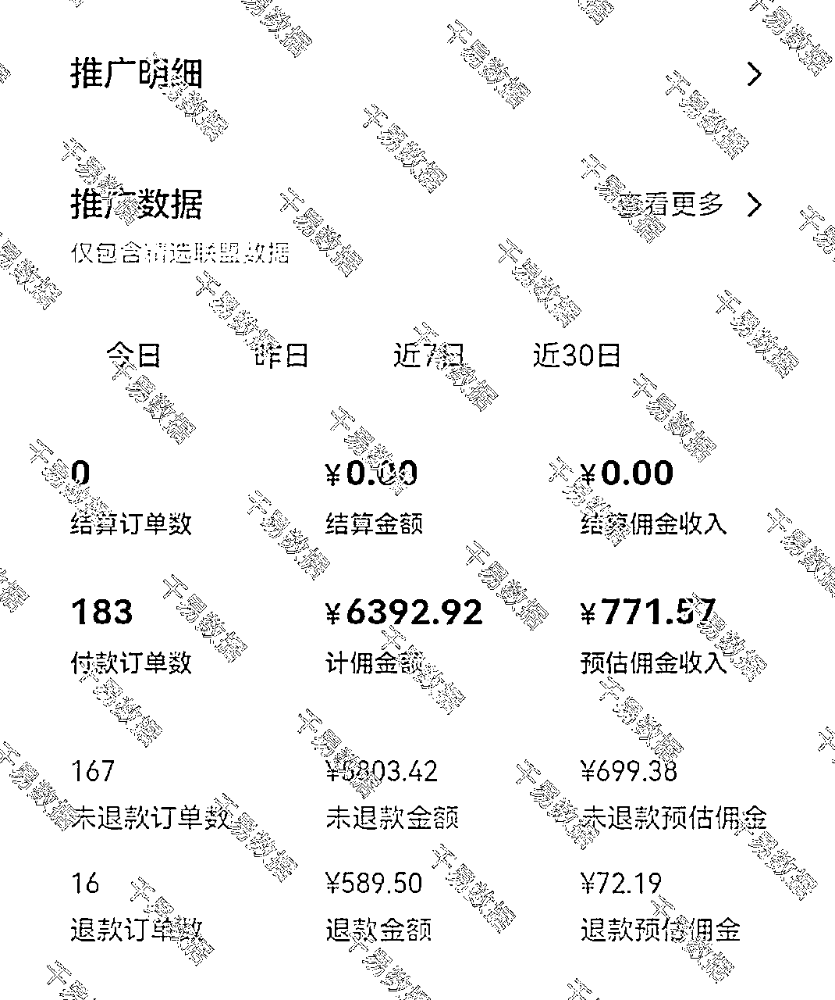
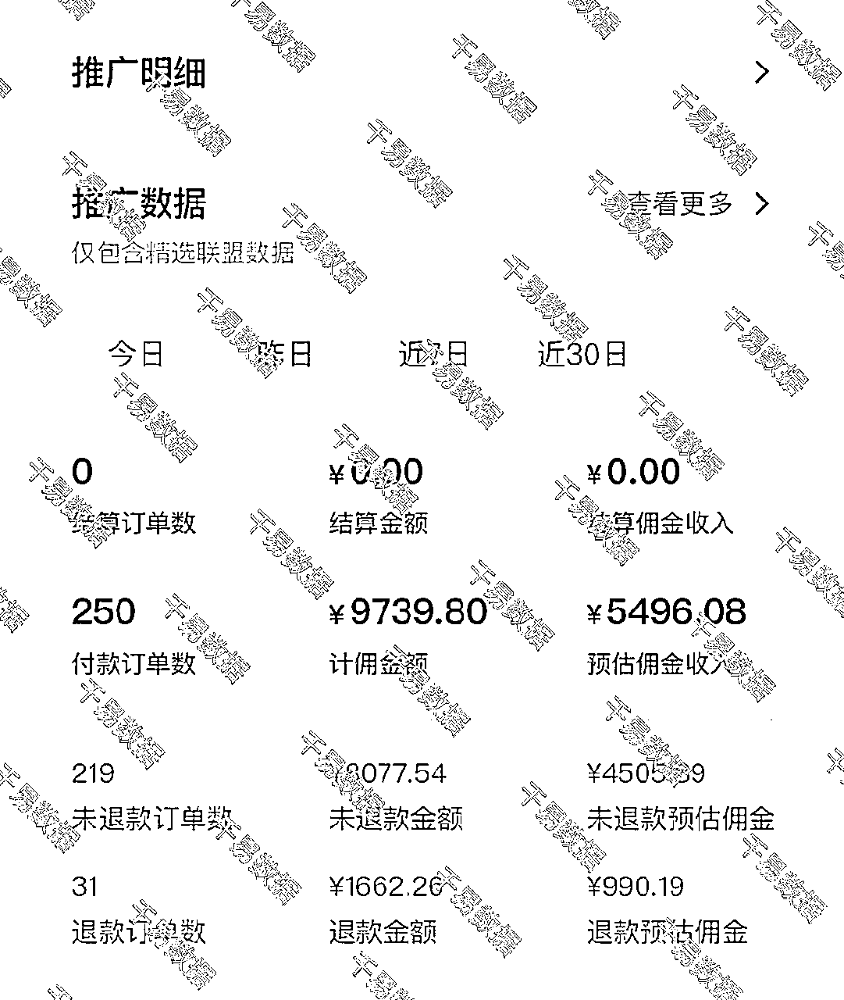
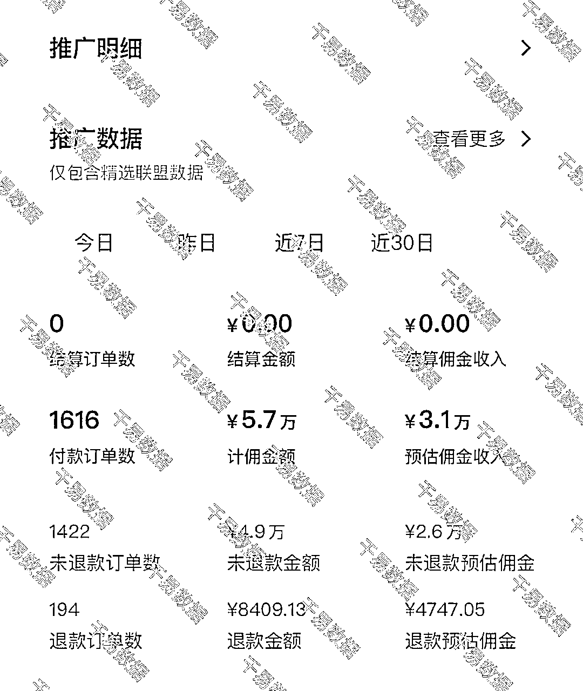

来源：https://u16gtzbrexc.feishu.cn/docx/ETkSdx3oBoI7RaxEHC6cc64xnPd
如果你没有做过多个项目，没有实际对比过不同项目的区别，很难理解“选择大于努力”这句话。
我过去7年创业过程中，做过很多个不同产品，不同行业的带货项目，比如，滋补品、铁锅、园艺品、零食、百货、咨询等业务，免费流、纯付费流玩法，短视频、直播带货等形式，可以说抖音上主流的玩法我都玩过。但是有的项目单月只有1W多利润，有的项目单月可以做到50W利润，同样是我操盘，用同样的流程跑通，我还是我，团队还是这个团队，为什么会出现这么大的差距？
和大家讲讲我最近经历的一件事，感受感受。
8月份的时候我分享了搜索流2.0玩法抖音直播带货，然后好多人想和我学，我就拿出空闲时间帮助了几个学员。其中一个学员的收益和其他学员对比，包括和我自己的直播间收益对比，其中的差距是5-10倍。
我们用的都是同样的玩法——搜索流2.0，
差不多都是同样的直播时长——每天16-17小时；
都没有投流；
话术都是用的对标的。
但是我自己直播间一个月GMV20W左右，利润率10%左右，利润2W左右，单日销售5-7K，单日利润700左右；后来我把直播间送给了团队伙伴。

那位学员可就不一样了，他每天销售1W左右，利润率50%左右，单日利润5000左右，7天收益就是我们一个月的利润。


我们同样的玩法，同样的付出，同样的人员，匹配不同的赛道，最后的结果可能相差10倍，乃至百倍。
选择大于努力！俗话说男怕入错行，行业选择不同，选品不同，面对的竞争对手也不同。就是这个不同，产生了很大的差距。
盈利多少被自身能力、赛道选择、项目周期（红利）三方面决定。努力是基础，是收益下限，选对行业才能提高收益下限，扩大收益上限。
通过上面的小案例，我相信很多人都有些体感了。今天就抛开自身能力，从客观市场角度谈谈赛道选择，项目周期（红利）到底是如何影响收益的。
行业到底代表的是什么，现在有个更时尚的名词叫赛道，其实都是一个意思。行业其实就是有共同需求的一群人，为了解决某个问题而购买XX产品/服务。
商家、产品（解决方案）、消费者三者共同构成一个行业。这三个方面不同的组合就会产生不同的结果。
比如，母婴行业，由于近几年生育率下降，消费者数量减少，导致商家竞争激烈，所以商家日子难过，而难过的商家中，有一类过的还行，原因是消费者对孩子的食品安全更加在意，无添加食品市场受影响相对较小。
那么相比母婴行业的消费者数量下降，银发经济却是风口，因为咱们正在进入人口老龄化阶段，人群规模正在扩大，消费者还在增长。所以很多商家被吸引进入，也开发出各种各样的产品，还远没有到竞争激烈的程度。
从上面你会发现，这三者其中一个发生变化，也会促使其他发生变化。
行业整体的销售天花板，就会卡控整个项目的收益上限。不同的行业有不同的天花板。这个天花板是由行业背后的消费者所决定的。市场规模 = 客单价 * 消费者数量 * 周期复购次数。
根据数据，2023年，我国女装行业的市场规模为10443.2亿元。
而休闲渔业，2023年，全国休闲渔业产值931.47亿元。
也就是说，这两个行业，干到第一名的话，其中也可能是10倍的差距。如果你想做一家百亿级公司，女装更有可能。
当然也有会反驳说，女装商家多，更卷，更难以做到。接下来还要说说行业的其他情况，最后综合考虑，别着急。
在行业里面影响我们收益上限的，除了天花板，消费者规模以外，还有就是商家之间的竞争情况不同。
其实就是行业所在的周期不同，在成长期的时候更容易做，更容易拿到利润。到成熟期的时候只有一部分头部商家能够保持利润，其他商家都会打的头破血流。
具体可以看这篇文章：
这里就不在详细解读行业周期问题了。
很多人刚开始做生意对行业没有很深入的理解，所以会逮住哪个做哪个，到后面发现行业差距的时候，自己和同龄人可能已经相差十万八千里了。这就是行业的特性所决定的，不以任何一个人，任何一个商家所决定。
我在上大学的时候，看市场营销杂志，其中一个案例到现在都记忆犹新。但是当时并不明白其中的含义，做过很多项目，踩过很多坑之后才突然顿悟。
案例上说，为什么啤酒卖不出白酒的价格，你想想这两个市场的区别有多大。
同样是粮食酿造，啤酒市场大部分都是十多块一瓶，为什么啤酒只能在这个区间卖。而白酒呢，从十多块钱一瓶，到几千块钱一瓶，为什么都能卖得动。大家有时候就调侃，白酒主要看茅台，他一涨，大家跟着提一下。啤酒谁也不看，你打我我打你。这就是行业特性所决定。
那么类似白酒的还有什么行业呢？类似啤酒的还有什么行业呢？
行业特性会让利润率保持在一个区间，有的行业无论竞争多么激烈，都不太打价格战，因为消费者不认，打价格战不会增加多少销量。但是有的行业却是价格战从早打到晚，直到大家毛利5-10%为止。
当然行业特性远不止利润率高低一项。只是这一项大家更有感受。
其中还有一些行业被称作逆周期行业，经济大盘不好的时候他才好。比如黄金、考证考研等等。现在整体环境下行，如果你在这样的行业里，就能有不一样的感受。
还有一些行业很稳定，没什么行业周期，每年大概都是差不多的，比如给三峡大坝做变压器的，密封圈的。旧设备多久更换一次都是固定的，全国也就这么几家能做。
你想想你自己所在的行业是什么样子的？
以上这些都是我们任何一个人，一个商家决定不了的，我们能够决定的就是要选择一个合适的行业，选择一个合适的时机进入一个行业，然后吃到这里面的行业红利。
行业红利本质就是行业在成长期中，产品价格贵，利润高，商家少，不打价格战的阶段。
这个阶段，更容易拿到利润，高增长也能够帮助建立团队，积累行业经验，打造自己的竞争优势，在成熟期的时候能够活下去。
没有行业红利，和宝贵的时间窗口，是很难逐渐扩大的。现在再建立一个抖音，一个女装品牌太难了。就算是企业创始人，让他以现在的市场情况从0开始，也不一定能够做起来。
（1）行业本身在成长期
就是行业是最近几年产生的，并且用户需求还未完全满足，市场还在不断扩大。比如高考填报志愿，这个在我上大学的时候压根没有，近几年如火如荼。
这种行业在成长期的机会更大一些，因为你在哪个平台做都有机会，他是商家，消费者，产品三者都不充分的情况下产生的。
（2）行业所在某个渠道在成长期
这种情况最近几年看到的也比较多，这个机会本质是渠道机会，也就是平台机会，比如抖音、快手、小红书、视频号等平台的出现都富了很多人。
由于之前的渠道并不能很好的覆盖到目标用户，导致目标用户有需求但是无法完成成交。现在互联网的出现，抖音、快手、小红书这些平台打破了地域限制，从而让行业产生很大的增量。比如家庭教育赛道、情感咨询赛道等；原本线下就有，通过互联网平台放大了市场。
你想想你所在的行业还有那些红利，或者没有红利了？
识别行业红利，主要靠行业信息的获取和处理，最常用的方法就是找到对标账号，根据对标账号的数量，质量，以及利润率，项目收益天花板综合判断，竞争对手少，竞争对手弱，市场还在增长，产品还比较粗糙，就代表有机会。
从我近一年的观察来说，实物电商的机会越来少了，大家都很卷了；而服务型电商的机会还有很多，包括最近一年大家说的本地生活赛道，本质也是服务型电商。大家可以往这个方向研究。
关于如何识别行业红利，如何找对标，看这个分享：https://xtx0o8yn7x.feishu.cn/minutes/obcntfvy81tc278pt7c79tpq?from=from_copylink
我把行业分为不同的集中情况，你可以对照着看看自己现在所处的行业是哪一类
1、打麻将行业：代表行业总是发生变化，有季节性、周期性、款式多，频繁更新的特点；所以在这个行业中就像打麻将，一把不胡没关系，还有下一局，只要手上的筹码还有就有机会。典型的有服装、鞋、箱包、家纺等行业；
2、打穿行业：就是该行业已经打过多轮价格战，甚至被打穿，并且产品大多一成不变，毛利很低。比如卫生纸、洗脸巾、脸盆等行业；这种行业干起来又累又苦，还没有多少利润；
3、梭哈行业：就是该行业的成长期比较短，过了成长期几乎就没有机会了，所以大家必须要在成长期梭哈一下，成就成了，不成就不成。比如网红、娱乐IP，过了平台红利期基本没有机会。
4、不变行业：不管别人怎么变动这个行业一直不动，比如特种装备行业、米面粮油行业，需求稳定，商家稳定，已经进入成熟期，想进入也比较难。
5、衰退行业：由于消费者变化、市场变化导致该行业用户变少，逐渐衰退，这种行业千万别进，无论是个人就业，还是创业。
6、线性行业：市场规模已经开发殆尽，消费者也没有很大的变化，产品更新也比较乏力，市场已经进入成熟期，能挣钱但是非常线性，大部分商家都是行业平均毛利率，时不时有新商家闯入，每年进入人挺多，死的也不少，就像是鸡肋，干也能干，但是规模被限制，利润被限制，时不时市场还波动下。常见的行业很多都是这个状态。
雷军大佬在一次采访中说：
我们教育所有人要勤奋，要努力，要拼命，要没日没夜，但是光有这个是远远不够的，他们都不知道自己往哪个方向去，所以我觉得我自己一直不能大成，就是受我们传统教育的障碍。我们传统教育鼓励聪明孩子加勤奋，天下无敌。但是，事实上，等我到四十几岁，我已经非常清楚，光靠勤奋和努力是远远不够的，踩风口甚至是必备，是大成的前提。
1、努力不是不重要，以现在的竞争强度，任何行业都要努力做到前三才能活的更久；
2、行业的很多因素我们确实无法更改，只能选择，所以重视自己所做的每次选择和决定；
3、行业选对了，也确实有红利，那成不成的关键就在于你的能力是否能够抓得住这个机会。你抓不住的机会也不是机会。打铁还需自身硬，只是追风口，就会出现来得快、去得快，飞得高、跌的重；
4、如果抓住了行业红利，一定要快速建立自身的竞争优势和壁垒。大潮终会褪去，不要做那个裸泳的人；
5、如果现在没有抓住行业红利，先找个项目赚钱活下来，在过程中不断探索，没有谁是一击必中的，测试的项目越多，成功率越高，选对的可能性也越大。
6、我们赚到的每一分钱，都有红利的影子。无论是上班，还是创业，走正确的路远比正确的走路更重要。大势所趋，顺势而为才能乘风破浪。
你好，我是千易，9年自媒体人，6年电商人，17年创业做今日头条至今。头条、抖音、视频号、小红书都做过，连续三次用5W本金赚到100W，操盘过多个项目，现在主要做大健康产业的直播间和短视频带货，多平台矩阵，有相关资源的伙伴可以链接！